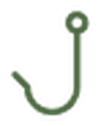
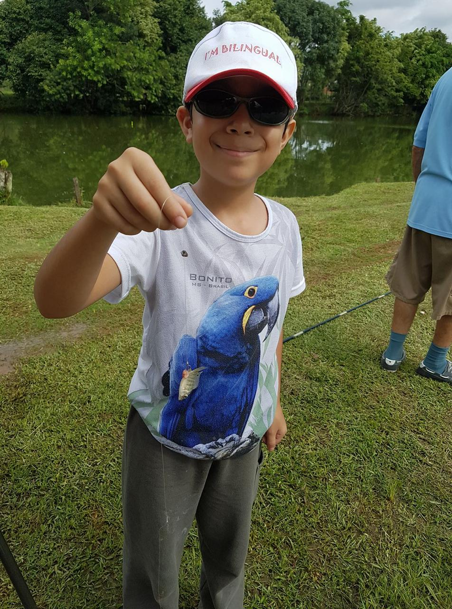
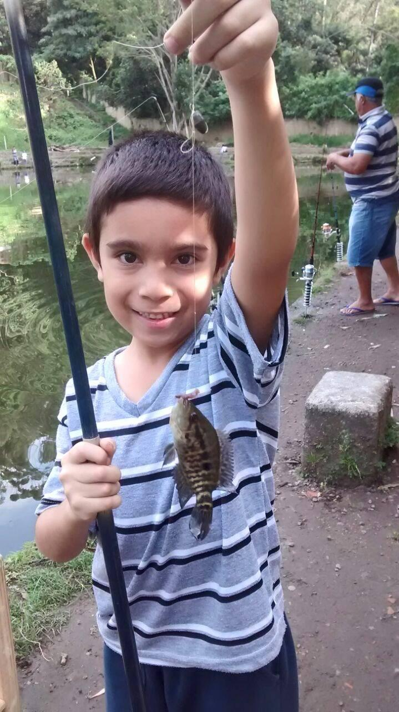
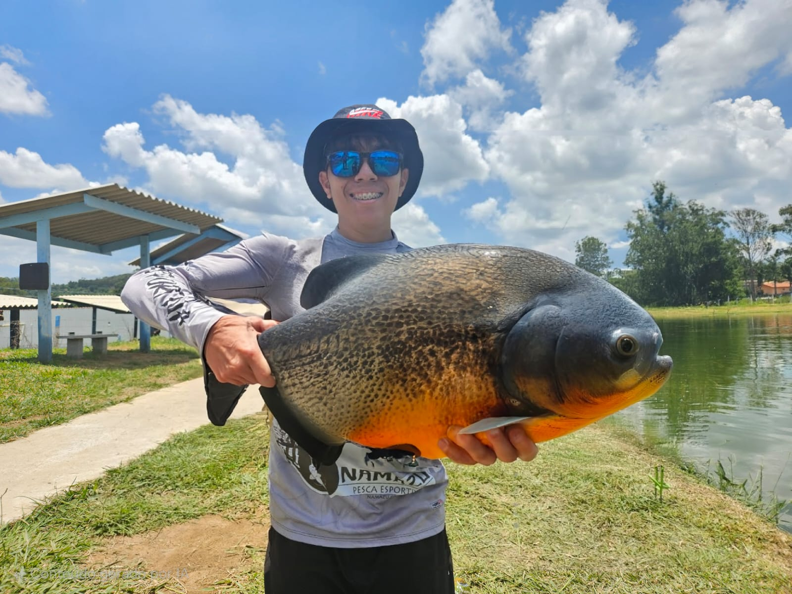

Olá, meu nome é Gabriel Bermudes
e eu gosto de pescar
- Gabriel Bermudes
São os momentos compartilhados, as conversas, as risadas e as histórias que tornam cada pescaria especial. No final, o que fica não é apenas o peixe que foi pescado, mas as lembranças construídas ao lado de quem faz parte da nossa vida.
Essas são as modalidades que eu ja pesquei
Realizada em embarcações, em diferentes pontos do mar.
Captura do peixe seguida de sua devolução à água.

Praticada em canais, como o canal de bertioga.
Realizada na areia, com arremessos em direção ao mar.
Fotografias de experiências e momentos que merecem ser lembrados.



Entre em contato para trocar dicas lugares
e experiencias vividas na pesca
Email para contato:
gabriel.bermudes@sptech.school
11 99999-9999